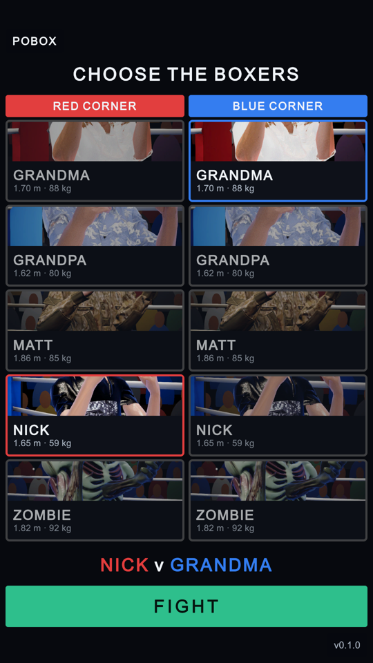
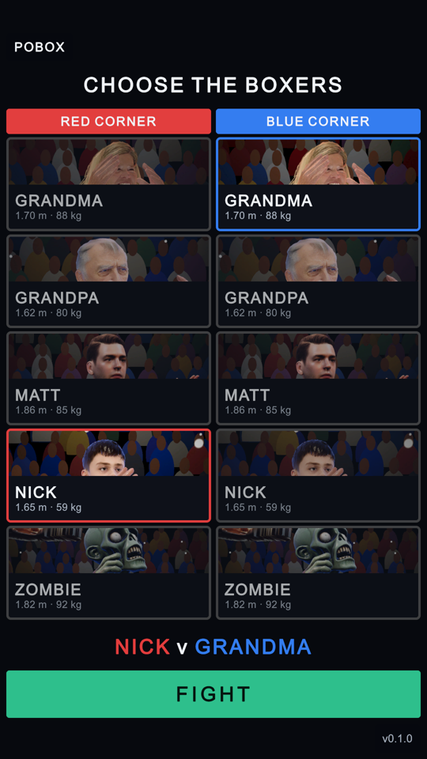

The boxer menu: faces on the cards, five boxers
3 October 2026 · Assets/UI/Theme.uss, Assets/UI/Portraits, Assets/Scenes/Menu.unity · both pictures are the menu panel itself rendered at 1080 x 1920 and shown at half size
Each card shows a wide strip of a tall portrait. The strip was cut from the middle of the picture, which is the boxer's chest, so no face could be seen. Trump and Lil Matt have been taken out of the game, so the menu is rebuilt with five boxers, and each card is taller.
BEFORE: THE MIDDLE OF EACH PORTRAIT

1 2
AFTER: THE STRIP ANCHORED ON THE FACE

1 2 3 4- Grandma's portrait taken again. In the old one her arm crossed her face; the new one is taken at the walk-on, in her plain guard, before her policy moves her (her trained guard covers her face too).
- Grandpa's portrait taken again, the same way: the old one was a blur of shirt and arm.
- Sizes from the new bodies. Matt is 1.86 m and 85 kg (the cards had 1.81 m and 79 kg, the old rig); Zombie 92 kg.
- Five boxers. Trump and Lil Matt are gone from the menu, the arena, the testbed, the announcer, the league
and the assets. Their models and checkpoints stay in
training/.
The change is three lines of style:
background-size: cover,
background-position-x: center and background-position-y: 16% on .pick-portrait,
in place of a centred crop. Every portrait is framed the same way (DevTools portraits), so one anchor
fits all five. Nothing is cut off at the sides: the picker keeps its margins on both, as before. In the editor,
the Simulator tab draws its phone frame wider than its window, which can look like the right column is cut.